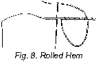

1926—The New-Way Course in Fashionable Clothes-Making
Lesson 6—Hems
The Hem
To finish a garment neatly, prevent the fabric from raveling and to conceal raw edges, the hem is employed. It is used also for ornamental purposes, and is made in the following manner:
First the raw edge of the material is folded under, making a very narrow turn that will cause no unsightly bulkiness. Then another fold is made, any width desired, and for all ordinary purposes is turned up on the wrong side of the material. Now the folded hem is stitched flat against the foundation material, either by hand or machine.
Just as certain types of trimming suit certain types of garments, so are hems appropriate for certain materials and styles. The purpose of this lesson is not only to teach you the various kinds of hems, but also to make you familiar with the kind of hem that is suitable for each particular kind of garment. Remember that the whole beauty of a hem rests in its neatness, and be sure that it is made mathematically straight, with stitches as small and fine as the material will allow.
Hem Made by Machine (Illustration VI-1)
As we have pointed out several times before, and as we want you to remember throughout the course, do not become alarmed if you do not own a sewing machine. Everything that can be made by machine can also be made by hand—and we teach both methods. The hand method, of course, means more time and effort. If you do own a machine, refer to your instruction book for full information regarding hemming.
In the box of attachments that came with your machine, you should find hemmers of different widths. If you have lost them, they can be replaced by your sewing machine dealer. These hemmers make hems from three-sixteenths of an inch to seven-eighths of an inch wide, right on your machine. They really do beautiful work, infinitely more rapid than you could ever expect to do it by hand, and they should be used whenever the material permits.
Machine hemming with the hemmer attachments means hours saved from hand turning and basting. The hem is turned by the hemmer, and at the same time the line of stitching is guided close to the edge of the hem. Always remember, when hemming by machine, to leave threads at the end sufficiently long to thread a hand needle and fasten the end of the hem. Otherwise it is likely to fray.
You will find the various width of hems which can be made with the hemmers, suitable for the usual requirements. But any hem that is more than seven-eighths of an inch in width must be turned and basted first, and then stitched on the machine in the ordinary way.
Using the Hemmer
- Remove the presser foot from your sewing machine and attach the hemmer you wish to work with. (See instruction book, which came with your sewing machine attachments, for method of attaching hemmers.)
- Beginning at the point where you want the hem to start, make one turn to the wrong side of the material one-eighth of an inch wide, creasing the material at this distance from the edge for about two inches. It is not necessary to baste it.
- Now insert the folded edge in the hemmer from the left, drawing it up and around the spoon, then toward you until the end of the hem is directly under the needle.
- Lower the presser-foot and proceed to stitch, being careful to feed the material evenly. If you find that the raw edge of your hem is not being sufficiently hidden, hold the cloth to the right; if the edge turns more than once or rolls, hold the cloth to the left.
- If you are inexperienced with the use of the sewing machine attachments, you will probably find a little difficulty in using the hemmers at first. Do not let this trouble you. The hemmers are a trifle more difficult to use than most of the other attachments and hence more practice and study is required. You will probably not be able to achieve a straight, even hem until after you have practiced over and over again. But remember that after you have mastered this method, you will be able to hem a yard of material in a twinkling—and hem it neater, finer and prettier than you could by hand in ten times the time! Only be sure that you feed the material into the hemmer evenly, holding it in as near a straight line as possible after inserting it in the attachment.
- It is not easy to feed soft materials such as batiste, georgette crepe, crepe de chine, chiffon, etc., into the hemmer. When you are hemming such materials as these, insert a piece of paper between the feed and hemmer. Newspaper serves the purpose better than any other, as it is easily torn away from the stitching.
- When hemming material that is seamed, press the seam as flat as possible. It is also wise to trim the corners at the end of the seam. Allow the machine to feed the cloth through the hemmer at all times as any pulling back of the feed will result in an uneven hem.
Hand Hems (Illustration VI-2)
It is often necessary, in dressmaking, to make hems by hand. When the material is exceptionally fine or exceptionally heavy, for instance, machine hemming would be impractical. The hand-made hem can be made just as neat and even as the machine-made hem, but extreme care must be taken to make the stitches very small and close together. Take up as few stitches in the hem and foundation material as is possible, and use as fine a thread as the material allows.
Always baste your hem before stitching it. A guide for turning the hem may be made of card-board with the width that the hem is to be indicated by a notch, as shown in illustration. This insures an even hem and a perfectly straight edge. (Illustration VI-2)
There are several kinds of hems used in home-dressmaking and sewing. Each one will be taken up individually in this lesson. The first, and perhaps most frequently used, is the plain hem. You will find it most convenient in finishing the edges of household linens, skirts, petticoats, and in fact any straight edge that you wish to be neatly and simply finished. The plain hem may also be stitched on the sewing machine.
Plain Hem (Illustration VI-3)
- A plain hem is a twice-turned straight edge used to conceal raw edges. The first fold is usually made to the wrong side of the material not more than one-quarter of an inch wide. Take particular pains to make this first fold straight, as the folded edge is your stitching guide later.
- The second fold is made any distance from the first you wish it to be, and is turned to the wrong side covering the raw edge of the first turning.
- Now the hem is stitched down with the hemming stitch you learned in Lesson 2, or any that you learn in this lesson, according to the type of garment and material.
Pin Hem (Illustration VI-4)
When extremely fine material is used, the pin hem is appropriate. It imparts a neat, dainty finish that does not impair the delicate attractiveness of the material upon which you are working.
- To make the pin hem, turn exactly as for a plain hem except that the turned edges must be as narrow as you can possibly make them.
- The hem must not roll, but remain absolutely flat.
- Stitch the hem to the material with the plain hemming stitch, sewing as fine as you possibly can. The beauty of the pin hem is its fineness, and any large stitches showing on the right side of the material will mar it.
 Napery Hem (Illustration VI-5)
Napery Hem (Illustration VI-5)

This hem is used in finishing table linens, handkerchiefs and even skirt hems on fine summer materials. The stitch employed blends with the threads of the material, giving the hem the same appearance on both right and wrong side after laundering.
- Draw thread at cut edge of the material and trim edge straight.
- Draw another thread, for first turn three-sixteenths of an inch from the edge.
- Determine the width you want the hem to be and draw second thread for second turning.
- Proceed as you did for the plain hem, turning to the wrong side and basting.
- After folding, hold the material with the wrong side toward you, turn the basted hem flat against the right side of the material, and baste again.
- Now with the first turn of the hem exactly even with the fold in the material, secure the hem in position with overhand stitching, making short, even stitches fairly close together. Study illustration VI-5 carefully before proceeding to make the napery hem.
- This hem can also be turned on the sewing machine with the help of the hemming attachment. Choose the width hemmer to suit, remove presser foot, and attach hemmer.
- Insert material as for hemming and without threading the machine proceed as if stitching the hem. This will turn the hem without stitching it down.
- When the hem has been turned in this way, press to make crease sharp and turn hem to right side as in hand turning of hem, and hem in place with overhand stitch. Practice until you can make this type of hem perfectly.
Mitered Corners—Bias Mitering
It is often necessary to miter corners of hems to remove bulky layers of material. It must be done very neatly if the beauty of the hem is to be preserved.
- To make the bias mitered corners, make a one-eighth or one-fourth inch fold to the wrong side, as marked "a" in illustration.
- Make a second turn the width you desire the hem, as at "b".
- Make a diagonal fold as at "c" so that the creases formed by "b" meet.
- Make a second diagonal fold one-fourth inch (or less, according to width of hem) from fold "c".
- Cut on fold "d" and turn again on line "c". Turn the hems again and baste in place.
- Use the hemming stitch to hold the hem in place.
Square Corner
When hemming squares or oblongs, it is necessary to make square corners. This, too, must be done neatly if it is to do justice to the neatness of the hem itself.
- Turn and crease the hem the desired width.
- Cut to within a seam of the turning, as shown in illustration, and hem the corner carefully so that no stitches show on the right side. (Study Illustration VI-7 carefully.)
Rolled Hem
On very sheer materials, the Rolled Hem makes an exceptionally dainty and neat finish. This is especially true where lace or insertion is joined.
- Hold the wrong side of the material toward you and trim off all ravelings until you have a perfectly straight edge.
- Starting at the right end, with the edge to be hemmed up, take the smallest amount of material possible between thumb and finger and roll tightly.
- Turn the roll two or three times so all raw edges are concealed. Fasten the thread with a back-stitch. From the right side, insert the needle so that it comes out under the roll on the wrong side. The stitch will be over the roll.
Catch Stitch Hem
On heavy materials, it is often desirable to omit the first turning in order to make the hem as flat as possible. In this case, the hem is finished with catch stitching to give it a neat appearance.
- Turn the hem the required width and baste.
- Hold in place with catch stitching, carrying the thread diagonally from the hem to the material.
- Another method for obtaining a flat finish on hems is to tape or bind. To bind hem, turn cloth as for catch stitch hem, basting a little below top of hem.
- Bind edge either by hand or machine, afterward hemming edge down with any hemming stitch.
- To finish with tape or ribbon, turn hem as for catch stitch hem and baste a little distance below the top of the hem.
- Baste top to the edge of the hem, stitch it down, and then hem the edge of the tape down to the material with any hemming stitch.
French
or Flannel Hem
Flannel Hem

The French hem, known also as the flannel hem, is not as practical as some others, but it is quite decorative. It is a flat hem made on the right side of a straight skirt.
- The seams should be stitched on the wrong side to the line where the hem will be stitched.
- When this point is reached, clip the seam to the line of stitching and finish the plain seam on the right side of the material.
- Press the seam open, and turn your hem to the right side as you would for any plain hem.
- Feather or briar stitching is usually used to hold the hem in place.
 Length Hem (Illustration VI-11)
Length Hem (Illustration VI-11)

When the hem to be made determines what the length of the garment shall be it is called the Length Hem. Extreme care should be taken in making this hem as a great deal of the beauty and charm of the finished garment depends upon the lines it assumes in hanging. And surely a garment cannot hang evenly and gracefully if the hem is not absolutely straight. We suggest that an ironing board be used instead of a table in the making of this hem. Draw the skirt over the board as for ironing, and you will find it very much more convenient than trying to achieve a straight bottom on a table.
- First determine the proper length of the garment to be hemmed. When you have found this correct length (A), mark it with basting or tailor's chalk. (Illustration VI-11.)
- This line you have just marked corresponds with the second turn of an ordinary hem. Turn back the material on the line and you have the bottom of your hem. In making this turn be sure that the material lies flat as any small irregularity, such as puckered cloth between pins, etc., will result in an uneven bottom.
- Now before proceeding any further with your hem, hold the turn flat in place by basting with the even basting through the fold of the material close to the edge.
- If the hem you are making is wide, pin or baste with diagonal stitches flat near the top before measuring the top for the second turn of this hem.
- Notch a piece of cardboard the width you want your hem, and then mark the line of turning at the top of the hem (B), using this cardboard marker as a guide. It can be done either with basting or tailor's chalk.
- Turn under on this line, baste against the foundation material, and finish with blind stitching.
The Length Hem will be used a great deal throughout your lessons in clothes-making, and in fact, throughout your association with clothes-making in all its phases. For this reason we advise you to study it carefully and not attempt to make the next hem until you have completely mastered this one.
Are you quite sure that you can make every hem that we have taught so far? Are you quite sure you will have no trouble when you are making a dress later on and we tell you to use a French Hem or a Pin Hem or when we tell you to miter a certain corner? It is not so much a question of finishing the course quickly as it is of learning each step thoroughly and perfectly, you know. And we want to feel sure that you are getting the full benefit of each lesson.
Perhaps you are finding the making of these various kinds of hems difficult. You may even find it a bit monotonous. But remember that you are preparing to make very charming little frocks and blouses and underthings soon, and you must know all the fundamental stitches and seams and hems before you can begin. So make up your mind that you are going to know all there is to know about hems before you begin the next lesson!
There are still two more hems that you must know about before we can proceed with Lesson 7. One is the gathered hem which is used on circular or gored skirts when the top of the hem is wider than the material to which it is to be sewed. The other is the narrow hem used for turning curved edges. Both are used quite frequently in dress-making but are really very easy to make if you only practice them sufficiently.
Gathered Hem (Illustration VI-12)
- Turn the hem just as you did for the length hem, measure for the depth of the hem and cut off the surplus material.
- Make a row of shirrings (very fine running stitches) about three-eighths of an inch from the edge. Draw the gathering thread until the top of the hem fits the skirt.
- Arrange the gathers so that the lines pull straight from the bottom. Be sure that the material is not drawn or uneven in any place.
- Bind the gathered top of the hem or finish with ribbon.
Hemming Curved Edges (Illustration VI-13)
- You will often find occasion to hem curved edges. When the edges are sharply curved, the hem must be very narrow, rarely over one-eighth of an inch.
- In making the first turn it will be necessary to snip open the material in several places to make it lay flat.
- Make second turn and stitch hem down with tiny hemming stitches. If a wider finish is needed use either bias or fitted facing. (Fitted facing is taught in Lesson 7)
- You can also make this hem on the sewing machine with the appropriate hemming attachment. Place paper between feed and hemmer to prevent the cloth from stretching.
We have now taught you all there is to know about hems and hemming. It will not be necessary for us to interrupt the interesting lessons of the course to teach the making of a certain kind of hem, or a certain kind of hemming stitch. But be sure before you leave this lesson that you know each detail thoroughly, that you can make each kind of hem without the least bit of trouble. If there is anything you do not understand, anything that is puzzling you, do not hesitate to write us about it and ask us to help you with it.
Lesson 6
Questions
- What is the purpose of a hem?
- How is a plain hem made?
- On what type of material is a pin hem used?
- What are the uses of the napery hem?
- Name different ways of giving a flat finish to a hem in heavy material.
- What is meant by the length hem?
- When is a hem gathered?
- In hemming curved edges, why are they clipped?
Samples of the following should be sent in for inspection in the envelope provided for the purpose. If samples are not correctly done, corrected work will be returned with full explanation. In the case of COMPLETED GARMENTS, the work will be returned to the student for use. Mail your samples with your answers to Quiz Questions and be sure to put name and address and student number on the outside of the envelope. Don't make your samples larger than 5 inches long and 3 inches wide.
Homework Problems
- Make a sample of a mitered corner. (A firmly woven cotton or linen piece will be easy to work with.)
- Make a sample in which you have removed the extra layers of a square corner. (This is also a type of mitering.)
- Make a sample of a rolled hem.